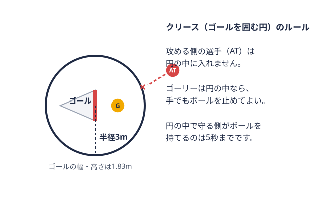
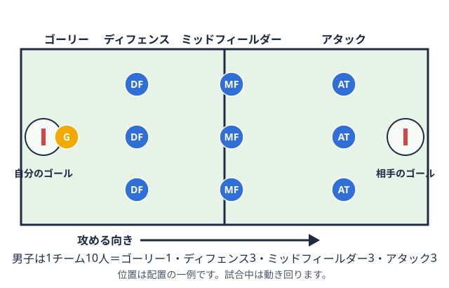

基礎スキル 2026-11-18
ラクロス シュートのコツ｜フォーム・狙う場所・練習の順番を整理
この記事の内容
シュートが決まらない原因は「フォーム」だけではないまず押さえたいゴールの大きさとボールの規格シュートフォームの基本4ステップ狙う場所：ゴーリーが動きにくいところを意識する試合で知っておきたいルール：打っていい位置・得点にならない場合「シュートが枠に行かない」「打てているのにゴーリーゴールを守る専任の選手。ゴールを囲む円（クリース）の中では、手でもボールを止められる。 
この記事では、シュートを「フォーム」「狙う場所」「ルール上の条件」「練習の順番」の4つに分けて整理します。フォームと狙い方は公開されている指導解説（主に米国の指導サイト）で共通して語られている内容を中心にまとめ、ゴールの大きさや得点の条件、ショットクロック攻撃側が一定時間内にシュートを打たなければならない制限時間。国際ルールは80秒で、一部の公式戦に適用。用語辞典で見るは日本ラクロス協会（JLA）の2026年度版公認男子競技用ルールブックで確認した内容を書いています。指導の言葉や表現はチームごとに違うため、あくまで考え方の整理として使い、実際の打ち方はチームの指導者や上級生の教えと照らし合わせてください。
なお、スローやキャッチの基礎は別記事で扱っています。シュートはスローの延長にある動作なので、まだ不安がある場合はスローのコツとキャッチのコツも先に確認しておくと、この記事の内容がつながりやすくなります。
シュートが決まらない原因は「フォーム」だけではない
シュートがうまくいかないとき、多くの人は「もっと強く投げなければ」と考えがちです。しかし、解説ではスピードだけでなく、次の3つの要素に分けて考えることが勧められています。
- フォーム: 毎回同じ動きで、狙った方向にヘッドクロスの先端にある、ボールを受ける枠の部分。内側に網が張られている。
 用語辞典で見るを向けて放てているか
用語辞典で見るを向けて放てているか - 狙う場所: ゴーリーが動きにくいところに打ち分けられているか
- 状況: 打っていい位置・タイミングで打てているか（ルール上の条件を含みます）
この3つのうち、練習で最初に固めやすいのは1のフォームです。2と3は、フォームがある程度安定してから意識しても遅くありません。逆にフォームが崩れたまま狙いや状況判断に手を出すと、何が悪かったのかを切り分けにくくなります。
まず押さえたいゴールの大きさとボールの規格
狙う対象の大きさを数字で知っておくと、「どれくらいの精度が求められるのか」がイメージしやすくなります。JLAの2026年度版公認男子競技用ルールブック（第2版）では、ゴールは内のりで、ゴールポストの間隔が1.83m、地面からクロスバーまでの高さも1.83mと定められています。ボールは円周が19.69〜20.32cmで、ここから直径を計算すると6.3〜6.5cm前後になります。
ゴール面は約1.83m四方、そこにゴーリーが立っているので、実際に枠内で打てる空きスペースは限られます。「ゴールの真ん中に思い切り打てば入る」というより、空いている場所にボールを置きにいく意識が必要になる理由がここにあります。
シュートフォームの基本4ステップ
米国の指導サイトや解説では、シュートのフォームは大きく次の流れで説明されています。スローの基礎フォームとほぼ共通しており、スローで身につけた形をそのまま使える部分が多くあります。
1. 構え：足と体の向きを作る
足を目標に向けて踏み出せる位置に置き、体は目標に対して横向き気味に構える、という説明が見られます。目線は打つ前に狙う場所へ向けておきます。ボールは打つ側の肩の少し上あたりで保持するとよい、という解説もあります。
グリップは、下の手をスティックボールを運ぶ・パスする・シュートするために使う、先に網が付いた棒状の道具。ボールは手で直接持てない。用語辞典で見るの端側に添え、上の手は下の手と間隔をあけて握ります。下の手が方向づけ、上の手が安定と力を与える役割だと説明されています。握りしめすぎず、しっかり握りつつ余裕を残すイメージです。
2. テイクバック：スティックを肩の後ろへ引く
スティックを肩の後ろに引いて、体とシャフトクロスの柄（持ち手）にあたる長い棒の部分。先端のヘッド（枠）につながっている。用語辞典で見るに「ためて」から振り出す、という流れが一般的に紹介されています。このとき、前側の肘を体から離し、目標に向けることが共通して強調されています。初心者は腕が体に近いままになりやすく、スティックが体の横にぶつかるような動きになると、ボールが散ったりスピードが乗らなかったりしやすいとされています。
3. 踏み込みと体幹の回転：腕だけで投げない
足を踏み出しながらスティックを振り出し、下半身から体幹、腕、スティックヘッドへと力を伝える動きが説明されています。「腕力ではなく体幹の回転で投げる」という考え方は、複数の解説で共通しています。腰だけをひねるのではなく、胸から上の回転と肩の入れ替えを使う、という表現もあります。
4. 手首のスナップとフォロースルー
放す瞬間に手首を使ってスティックヘッドを返し、そのあとスティックを最後まで振り抜く、という流れが基本です。フォロースルーが途中で止まると、方向や球速が安定しにくいと説明されています。放したあとのスティックヘッドが、自分が狙った方向を向いているかを確認する習慣をつけると、癖を見つけやすくなります。
低いコースを狙うときの注意
低いコースを狙うときは、放すタイミングを遅らせると低い位置に飛びやすい、サイドアーム（横から振る形）を使うと低く打ちやすい、という解説があります。ただし、サイドアームは別のフォームになるため、基本のオーバーハンドが安定してから取り入れるほうが無理がありません。
狙う場所：ゴーリーが動きにくいところを意識する
フォームが固まってきたら、どこを狙うかを意識します。米国の指導解説では、次のような考え方が紹介されています。
- ゴールの四隅（コーナー）: ゴーリーが届きにくい場所として挙げられることが多い
- ゴーリーの腰の外側（オフヒップ）: 狙い目の一つとして挙げられる（コーナーと並んで得点しやすい場所と紹介されています）
- 高さの打ち分け: 高いコースを見せたあとに低く打つ、またはその逆、と高さを変える
- フェイントの活用: 一方向にフェイントを入れ、反対側に打つ
どれも「毎回同じ場所に打つとゴーリーに読まれやすい」という考え方が土台になっています。ただし、狙いを細かくしすぎるとフォームが崩れて枠を外す場合もあります。最初は「ゴールの大きな4分割のうち空いているところへ」といった広い目安から始めて、枠内に収まる割合が上がってから、コーナーなど細かい狙いに進むほうが進めやすいでしょう。
自分が所属するチームの相手ゴーリーの癖や、ポジションごとの狙い方はチーム内で共有されていることが多いため、上級生やコーチに聞いてみてください。ゴーリー側の視点はゴーリーの役割と練習法で整理しているので、「どんな打ち方が嫌なのか」を知る参考になります。
試合で知っておきたいルール：打っていい位置・得点にならない場合
シュートは「フォームが完璧なら必ず得点」というものではありません。JLAの2026年度版男子ルールブックには、シュートに関わる次のような条件があります。男子競技の規定をもとに整理しているため、女子の部員は女子競技用のルールで該当部分を確認してください。ルール全体はラクロスのルールをわかりやすくにもまとめています。
| 項目 | 内容（JLA2026年度版・男子ルールブックより） |
|---|---|
| 打つ位置 | ゴールラインの仮想の延長線（GLE）より前方からでなければシュートとして扱われない |
| クリースゴールを囲む半径3mの円。男子では攻める側の選手は中に入れず、ゴールを守る選手が守られる。用語辞典で見る | ゴールを中心とした半径3mの円。オフェンスの選手の体の一部がクリースエリアに触れていた場合、ボールがゴールに入っても得点にならない |
| 得点の成立 | ボールがゴールの平面を前方から完全に通過したとき |
| クロスのトラブル | シュート中・フォロースルー中にヘッドが取れた場合は得点にならない |
| ショットクロック | 80秒（国際ルールとして2026年1月1日から実施される旨が記載） |
特に気をつけたいのは、クリースへの接触です。ゴール前でシュートを打つときに、勢い余ってクリースの線に触れてしまうと、せっかく入っても得点が認められません。クリース付近で打つ練習をするときは、足の位置を意識して「打ち終わった後にどこに着地するか」まで確認しておくと安全です。
ショットクロックは、攻撃側がボールを持っている間のカウントです。GLEより前方から放たれたシュートがゴーリーやゴーリーの用具、ゴールパイプに当たった場合や、得点が決まった場合にリセットされると記載されています。つまり、攻め続けるためには「枠に飛ばして、リセットの条件を満たす」ことも意味を持ちます。枠を外すシュートはリセットの条件を満たさないため、打つ位置や体勢を選ぶことも判断材料になります。
練習の順番：壁当て→止まって→動きながら→実戦形式
米国の指導解説では、シュートは段階を踏んで練習することが勧められています。ある解説では「止まった状態で打つシュートでフォームが崩れるなら、走りながらのシュートや実戦形式に進む理由はない」という趣旨の考え方が紹介されています。この考え方を参考に、練習の順番を整理します。
| 段階 | 内容 | 確認したいこと |
|---|---|---|
| 1. 壁当て壁に向かってボールを投げ、跳ね返りを受ける、一人でできる基礎練習。用語辞典で見る | 壁に向かって近い距離から打つ | 肘が体から離れているか、ヘッドが目標を向いているか |
| 2. 止まって打つ | ネットやゴールに対して静止した状態から打つ | 足の踏み出しと体の向き、狙った場所に収まるか |
| 3. ステップを入れる | 踏み込みながら（クロウホップ）打つ | 動きの中でフォームが保てるか |
| 4. 走りながら | 走り込んで打つ。利き手側（外側の手）で打つ形から | 走りながらでも打つ方向が定まるか |
| 5. 実戦形式 | ディフェンス主に自陣のゴール近くで、相手のシュートを防ぎボールを奪う選手。男子は3人。  用語辞典で見るをつけて、2対1や1対1からシュートまで | 状況に応じて打つ・パスの判断ができるか |
走りながらのシュートについては、外側の手で打つ形が練習の基本とされています。内側の手で打つ形は力を伝えにくく、実戦では使いにくい場面が多いという解説もあります。
非利き手のシュートは、慣れるまで時間がかかります。利き手のフォームがある程度固まってから、少しずつ回数を増やすと取り組みやすくなります。両手で打てると、ディフェンスの対応を絞らせにくくなる、というのが一般的な説明です。
一人でできる練習と、体づくり
壁当ては一人でもできるシュート練習です。壁の前に立ち、ボールを受けてから打つ動作を繰り返すことで、「キャッチ→構え→シュート」の流れを確認できます。回数や強度は、疲労やフォームの乱れを見て調整してください。指先や手首に違和感が出た場合は無理をせず、突き指の予防も参考にしてください。
体幹の回転がシュートの力の伝え方の中心になるという考え方から、体づくりとしては体幹トレーニングや筋トレメニューも役に立ちます。ただし、筋力を上げれば自動的にシュートが上達するわけではなく、フォームとのセットで考える必要があります。
つまずきやすいポイントと見直し方
練習で起こりやすい症状ごとに、見直し候補を並べます。原因は人によって違うため、1つずつ変えて確かめるのが基本です。
- 枠に行かず、左右にずれる: 放す瞬間のヘッドの向きとフォロースルーを確認します。目線を狙う場所に向けてから打てているかも見直し候補です
- ボールが浮く: 放すタイミングが早い可能性があります。足の踏み出しと放すタイミングを確認します
- 球速が出ない: 腕だけで投げていないか、肘が体に近すぎないかを確認します。体幹の回転が使えているかも見ます
- コーナーを狙おうとして枠を外す: 狙いを細かくしすぎている場合があります。まず枠内に収める割合を増やすことを優先します
- 正面でよく止められる: 同じ場所ばかり狙っていないか、高さの打ち分けやフェイントを使えているかを確認します
動画で自分のフォームを撮影して見返す方法もあります。本サイトの動画インデックスで他チームの試合映像を探し、シュートの前後の動きを見比べるのも一つの方法です。映像分析の進め方は試合映像分析の始め方で扱っています。
他チームのデータから得点力を見る
シュート力はチームの得点にも表れます。本サイトの関東男子の記録室では、リーグ戦データから通算の総得点・総失点などの集計を確認できます。自分のチームや気になるチームが、得点で勝ってきたのか、守りで勝ってきたのかを眺めると、練習の優先順位を考える手がかりになります。リーグ別の勝敗や得失点差は関東男子の順位表や、全国のチーム一覧からチームページへ進んで確認できます。ポジション別の役割はアタックの役割と練習法やミッドフィールダーの役割と練習法で整理しています。
用語で分からない言葉が出てきた場合は、ラクロス用語集もあわせて使ってください。入部したばかりの時期の練習の流れは新入生の練習メニューでまとめています。
まとめ
ラクロスのシュートは、フォーム・狙う場所・ルール上の条件・練習の順番に分けて整理すると、取り組みやすくなります。
- フォームは、構え→テイクバック→踏み込みと体幹の回転→スナップとフォロースルーの流れで見直す
- ゴールは内のりで1.83m四方、ボールは直径6.3〜6.5cm前後。空いている場所に置きにいく意識が大切
- 狙う場所は、まず枠内に収まる割合を上げてから、コーナーなど細かい狙いに進む
- クリースへの接触やGLEより後方からの扱いなど、ルール上の条件を知っておく
- 練習は壁当て→止まって→ステップ→走りながら→実戦形式の順で、フォームが崩れたら一つ前の段階に戻る
効果の出方には個人差があり、本記事の内容は公開されている解説をもとにした一般的な整理です。実際の指導方針はチームや指導者によって異なるため、チームの教えを優先し、疑問があれば上級生やコーチに確認してください。
出典
- 2026年度版 JLA公認男子競技用ルールブック（第2版）| JLA（ゴールの大きさ・クリース・得点の条件・ショットクロック・ボール規格）
- 10人制男子競技｜公認競技ルール | JLA
- 10人制女子競技｜公認競技ルール | JLA
- Lacrosse Shot Guide: How to Shoot a Lacrosse Ball | Lacrosse Monkey（フォーム・シュートの種類・低いコースの狙い方、英語）
- How to Shoot Your Shot | Lax All Stars（構え・運動連鎖・段階的な練習の考え方、英語）
- Lacrosse Shooting Drills | Stringers Society（狙う場所・打ち分け・走りながらのシュート、英語）
このチーム・この競技を応援したい方へ
ツナカレでは大学の部活・団体への協賛先を探せます。
取材してほしい部活を募集中
頑張っている部活・団体を、ツナカレ運営メディアが取材でご紹介します。
部活を続けながら、就活も進めたい方へ
体育会の学生のための就活相談です。無料で、メールアドレス・学年・所属の入力だけで始められます。